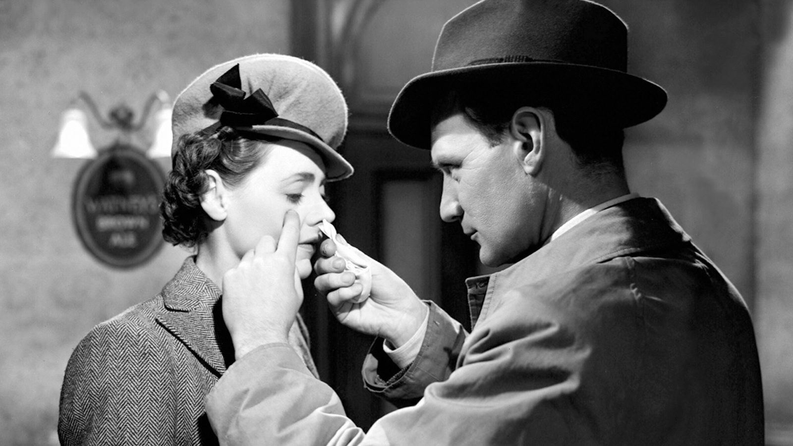

Photo courtesy of ROBERT KRASKER/EAGLE-LION FILMS
This article contains spoilers for Brief Encounter.
In 1938, French, American, and British jury members, outraged by Hitler and Mussolini’s overruling of the jury’s decisions on Best Film and Best Foreign Film at the Venice Film Festival, withdrew from the festival in protest. The French elected to form their own festival, with the intention of it being completely free of all societal or political pressures. They would host it in the city of Cannes.
Come 1939, it was to be the year the festival would be held for the first time; instead, the threat and eventual start of World War II caused the festival to be postponed. Then in 1946, after a shaky attempt to raise enough money to host the event, the festival proved to be an immense success. There, the coveted Grand Jury Prize — the festival’s highest honor until the inception of the Palme D’or in 1955 — was awarded for the first time ever, kickstarting a long tradition among filmmakers to see it as possibly the highest honor achievable. Its first recipient: David Lean’s Brief Encounter.
To the avid film enjoyer, David Lean is a name that invokes images of breathtaking desert sunrises, dense jungle foliage, and empty Arctic snowscapes. For me, he was the director that made me ask: “What is aspect ratio?” He was a pioneer of large scale cinematic journeys and defined epic storytelling, his most famous films being Lawrence of Arabia, The Bridge on the River Kwai, and Doctor Zhivago — all of which won numerous academy awards.
So it may come to a surprise to some that his only film to score a win at the Cannes Film Festival, which also inspired Wong Kar Wai’s highly acclaimed In the Mood for Love, is a black-and-white drama completely set in a train station. But for all its simplicity in setting, Brief Encounter is a film that deals with ideas and feelings equal in scale to the epics that would later come to define Lean’s career.
Its premise is simple: a doctor and a housewife, both in separate marriages, meet for the first time. Except, somehow they continue to run into each other until they decide to meet one another over and over again. There are many works that have grappled with themes of adultery and infidelity, but it is how Lean explores these taboos that distinguishes this work like no other. Because there are people who are not seeking to be unfaithful. Neither of the main characters are looking for any excitement in their lives; both of them, in fact, profess to be leading perfectly happy lives. It is those small moments at the platform, as they await their train, with the calls of whistles and smell of smoke and steam in the air, that their feelings reveal themselves. The bustling trains, in a way, reflect the fleetingness of their emotions; but the heart knows what it wants.
And the film is not afraid to delve deeper into the intricacies of their affair, as their conversations revolve over their love and the guilt they feel for loving one another. They know what to do, but they do not know how to do it. Their heart tells them one thing, and their mind another. The result is a beautifully crafted romance that continues to inspire many more films like it.
Photo courtesy of ROBERT KRASKER/EAGLE-LION FILMS
The film presents exceptional performances from its leads, Trevor Howard and Celia Johnson. However, Lean’s decision to make Laura (Johnson) the central protagonist gives the movie an entirely different perspective, as seen through the eyes of a woman. Her internal monologues allow us to view a sequence of flashbacks that almost read as a confession to her unknowing husband. At times these monologues are imbued with intricate and exaggerated details, as her thoughts spiral out of control. Johnson delivers some of the greatest acting ever to grace the silver screen. Laura’s anxieties, desires, and guilts — we feel all of them.
And we sympathize with her. Every little glance and forced smile commands our attention. Her performance is only further amplified by the powerful score that pervades the entire film: Rachmaninoff’s Second Piano Concerto, as performed by the Australian pianist Eileen Joyce. Joyce masterfully finds a way to evoke a sense of unfulfilled longing in her interpretation that I cannot help but think: “That is what love sounds like.”
In a pivotal scene, we hear the piano and orchestra pulsing with the central melody of the concerto’s second movement, as it accompanies the two lovers’ forlorn walk on the platform. Laura enters her train car, and Alec (Howard) begins to apologize for all the pain and misery he has caused in their relationship; she solemnly stares back and extends her hand. “I’ll forgive you if you’ll forgive me,” she says. Nothing else quite speaks to the universality of love as that small exchange.
I will always remember the first time I saw this film. It was around three in the morning, and I was restless. I had recently acquired HBO Max and was ready to dive into its extensive film library. The film poster displayed two lovers, dressed in elegant 1940s attire, staring into one another. One might have even mistaken it for Casablanca, Michael Curtiz’s critically acclaimed romance; yet, the film description clearly credited David Lean. I decided to give it a go. I was not prepared for the raw emotions on the screen to hit me. By the end, tears were streaming down my cheeks and my mouth was agape. It was like nirvana. I felt as if I had come to a greater understanding of the longing we all feel, and for the first time in my life I knew the meaning of love and forgiveness.
What Lean does is one of the most truthful, thoughtful, and painful experiences I have ever been through. These people are not malicious; they are not looking to hurt their partners; and they are not in search of happier lives. But they cannot help but feel the way they do. They make mistakes. And they are faced with the ultimate choice. This brutal and heartfelt sincerity is why this underrated cinematic masterpiece is my favorite film of all time. And I will continue to come back to it again. And again. And again. ■